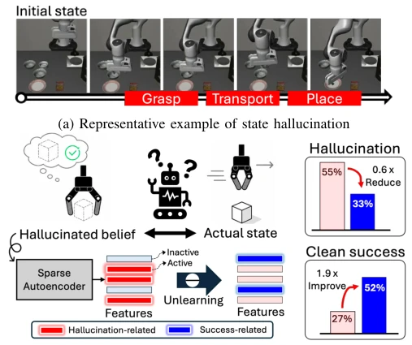
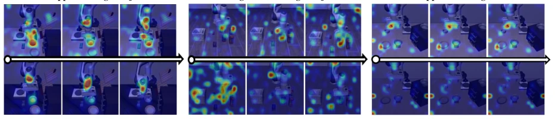
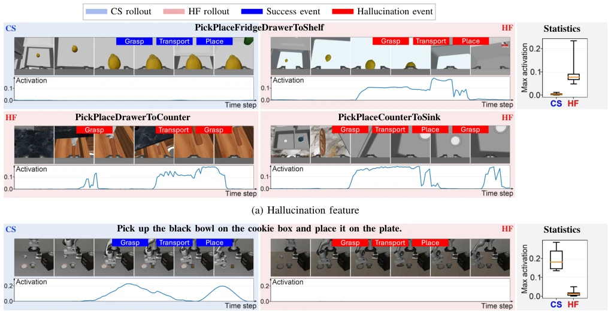
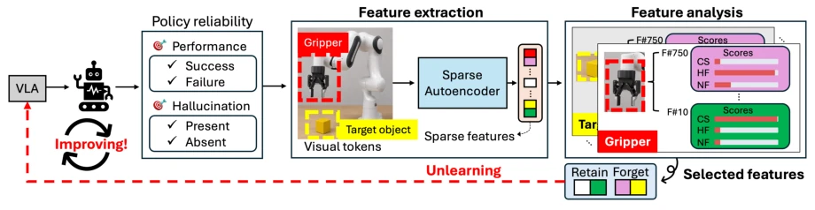
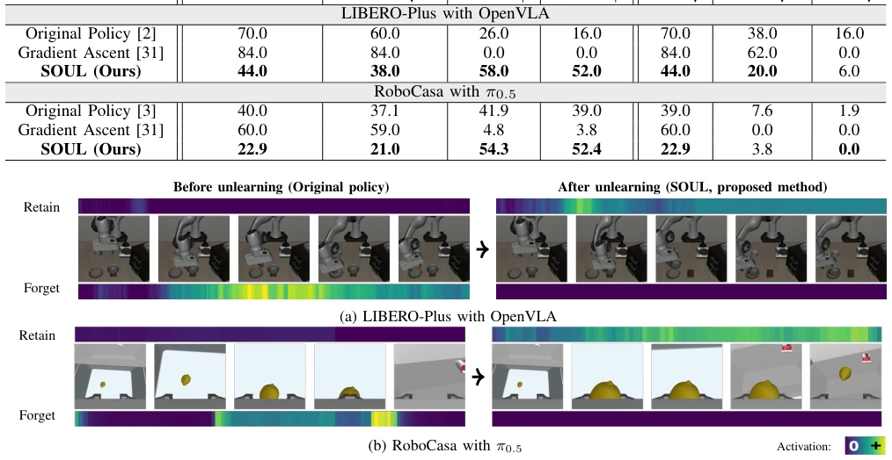
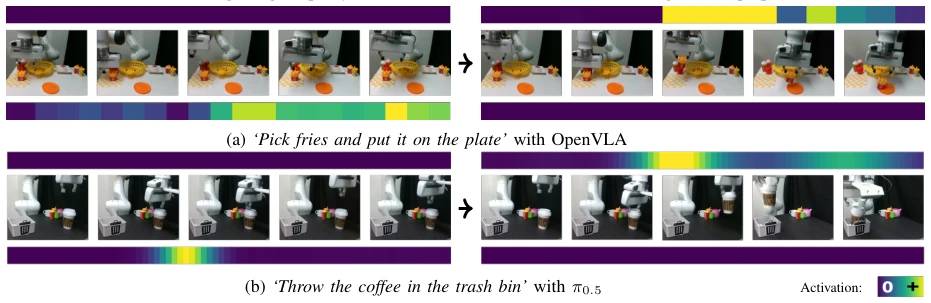

This paper cures the "hallucination syndrome" of VLA models, but the means are somewhat "violent". Authors found robots often "pretend" to have grabbed something, while hands are still open; this "self-deceptive" behavior leads to task failure. The SOUL method uses Sparse Autoencoders (SAE) to identify neuron features responsible for "lying", then forcibly "brainwash" the model to forget these features, while strengthening "honest" features. This approach works, hallucination rate dropped, success rate increased, and most original capabilities were preserved. However, do the features extracted by SAE truly generalize? If changing tasks or environments, are these "forgetting targets" still accurate? Additionally, will this fine-tuning targeting specific failure patterns make the model "biased", only good at not making specific errors, but forgetting other skills? After all, robots do not become smarter just by "amnesia", but as a diagnosis and correction tool, this idea is indeed much more sophisticated than simply stacking data.
Although Vision-Language-Action (VLA) models have strong generalization capabilities, they often exhibit unreliable behaviors in real-world deployment, particularly "State Hallucination" (State Hallucination). This is a recurring failure pattern, meaning that when the robot has not actually reached a certain state (e.g., has not firmly grasped the object), the model still continues to execute subsequent actions (e.g., transport, place) based on this false state, leading to error accumulation [1], [2]. Existing work mostly focuses on intervention or failure detection during inference [12], [21], or attempts to improve robustness by increasing data, but lacks mechanisms for selective modification of internal policy knowledge. Traditional Machine Unlearning (Machine Unlearning) is mostly used for classification or language tasks [26], [30]; when directly applied to robot policies, it is often difficult to balance the contradiction between "forgetting errors" and "retaining skills", easily damaging tightly coupled manipulation skills [27]. Furthermore, existing interpretability research is mostly used for intervention during inference [24], [25], rather than directly modifying pre-trained policy parameters to permanently correct behavior. Therefore, how to precisely identify and remove internal knowledge causing state hallucination while retaining the ability to perform successful operations is the key pain point in improving VLA reliability.

Fig. 1: Sparse feature policy unlearning mitigates hallu- cinated beliefs in VLAs. (a) Examples of grasp, transport, and place state hallucinations. (b) State hallucination occurs when a VLA mistakes its hallucinated belief for the actual robot-object state and generates actions based on this false belief. During this mismatch, hallucination features become strongly activated, and the proposed unlearning suppresses their activation while reinforcing success features. (c) Our sparse feature policy unlearning reduces hallucination while improving clean (hallucination-free) task success.

Fig. 2: State hallucination is associated with distinct attention patterns. Representative clean success (CS, hallucination-free success) and hallucination failure (HF, failure with hallucination) rollouts under the same task show distinct attention patterns. HF exhibits weaker attention to task-relevant regions (e.g., gripper and target object) and increased attention to the background.
This paper proposes the SOUL (Sparse feature pOlicy UnLearning) framework, the core is selective policy unlearning through sparse features. The overall process is divided into three steps: First, use Sparse Autoencoders (SAE) to decompose VLA visual token activations into sparse features, and define "feature association scores" to quantify the association strength between features and different execution outcomes (Clean Success CS, Hallucination Failure HF, Non-Hallucination Failure NF). Second, based on scores, screen "forgetting sets" (features strongly associated with HF, weakly with CS) and "retention sets" (features strongly associated with CS), achieving feature-level target localization. Finally, construct a feature-guided forgetting objective function: minimize activation of forgetting set features for HF samples, maximize activation of retention set features for CS samples, update policy parameters by optimizing LoRA adapters, while freezing SAE encoders. Innovations lie in: 1. Introducing region-aware feature analysis, aggregating feature activations to semantic regions (e.g., robot arm, target object), more precise than global or Token-level selection [Fig 4]; 2. Designed composite forgetting scores, not only considering hallucination association, but also forcing distinction of non-hallucination failure and penalizing association with success features, ensuring targeted forgetting; 3. Directly transforms interpretable sparse features into forgetting/retention targets, achieving a closed loop from "diagnosis" to "correction", rather than staying only at the analysis level.

Fig. 3: Sparse features associated with state hallucination can be identified. For each feature, we show clean success (CS) and hallucination failure (HF) rollouts with their temporal activations, ze,t,r,j, together with the distribution of rollout-level maximum activations, me,r,j. (a) A hallucination feature becomes strongly activated around hallucination events, while remaining weak in CS. (b) A success feature is strongly activated during successful subtask execution or task completion in CS, while remaining weak in HF. The boxplots show consistent activation differences between CS and HF across rollouts.

Fig. 4: Overall framework. The proposed method provides a framework for improving robot policies by identifying and selectively modifying internal representations associated with undesirable behaviors. It first extracts visual-region-specific sparse features from policy activations and analyzes their activation patterns across execution outcomes, including clean success (CS), hallucination failure (HF), and non-hallucination failure (NF), characterized by task performance and hallucination occurrence. Based on these associations, region-feature pairs are selected as forget or retain targets. The policy is then updated to suppress hallucination-associated features while preserving reliable behavior. In this way, the policy is improved.
Evaluated on LIBERO-Plus, RoboCasa simulation, and Franka real robot. Baselines include original policy and gradient ascent-based forgetting method. Results show SOUL reduced average hallucination rate from 55.0% to 33.5%, clean success rate from 27.5% to 52.2%, and retained 89% of original successful behaviors [Table I]. Ablation studies show region-guided feature selection outperforms global or Token-level selection [Table II], and aggregation terms in forgetting scores and retention targets are crucial for balancing hallucination suppression and skill retention [Table III]. Visualization analysis confirms, after SOUL fine-tuning, "forgetting feature" activations at hallucination events are significantly suppressed, while "retention feature" activations enhance, and false state assumptions no longer appear in behavior [Fig 5, Fig 6]. Real robot experiments further validate the method's effectiveness under complex visual conditions.

Fig. 5: Visualizations of rollout behavior and feature activations on benchmarks. We compare the original policy and the proposed method, showing the temporal activations of selected forget and retain features during execution.

Fig. 6: Real-world rollouts and selected sparse feature activations before and after applying the proposed unlearning, SOUL. We compare the original policy and SOUL across representative real-world rollouts spanning both models and tasks.